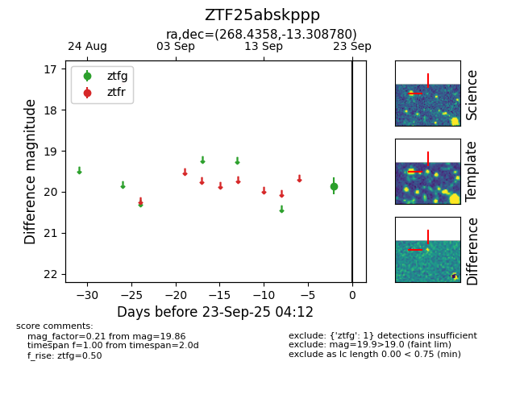

FINK: ZTF25abskppp
Lasair: ZTF25abskppp
ALeRCE: ZTF25abskppp
ZTF25abskppp (ztf,fink)
equatorial (ra, dec) = (268.4358,-13.30878)
galactic (l, b) = (14.4287,+6.35951)

last ztfg=19.86
1 ztfg detections